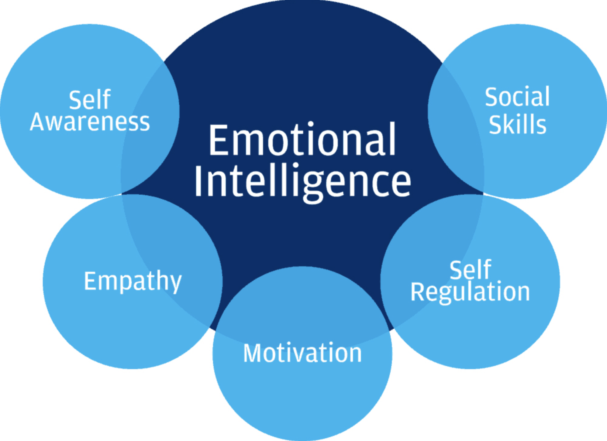

Emotional Intelligence and the importance
What is Emotional Intelligence?
Emotional Intelligence (EI) is the ability to manage both your own emotions and understand the emotions of people around you.
There are five key elements to EI:
self-awareness, self-regulation, motivation, empathy, and social skills.

Why is it so important?
Emotional intelligence is the ability to identify and regulate one's emotions and understand the emotions the others.
A high EQ helps you to build relationships, reduce team stress, defuse conflict and improve job satisfaction.
How does it affect in workplace?
Emotional intelligence consists of insight into others' emotions as well as one's own.
High emotional intelligence drives collaborative leadership and win-win outcomes.
Emotional intelligence is correlated with confidence, resilience and perseverance.
How to improve emotional intelligence in 9 steps
- Be more self-aware.
-
Being aware of your emotions and emotional responses to those around you can greatly improve your emotional intelligence.
-
Recognize how others feel.
- Practice active listening.
- Communicate clearly.
- Stay positive.
- Empathize.
- Be open-minded.
- Listen to feedback.
 Emotional Intelligence
Emotional Intelligence